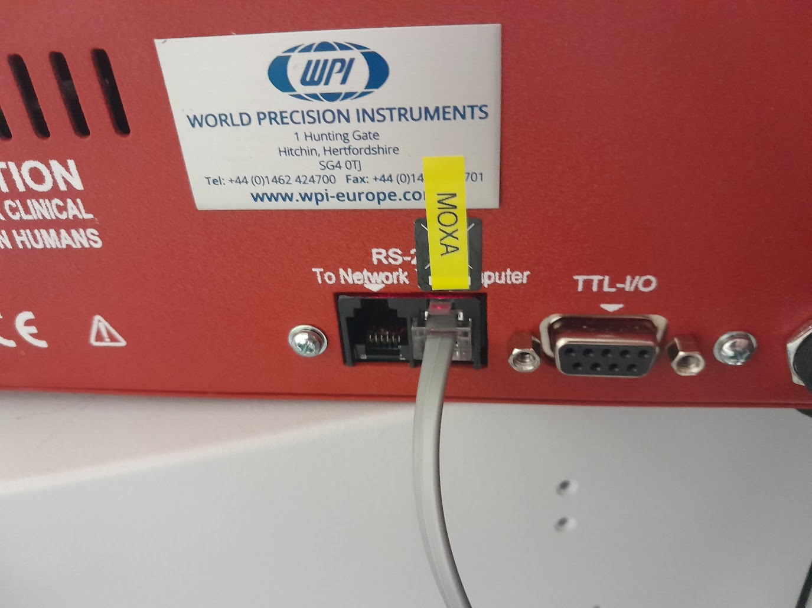
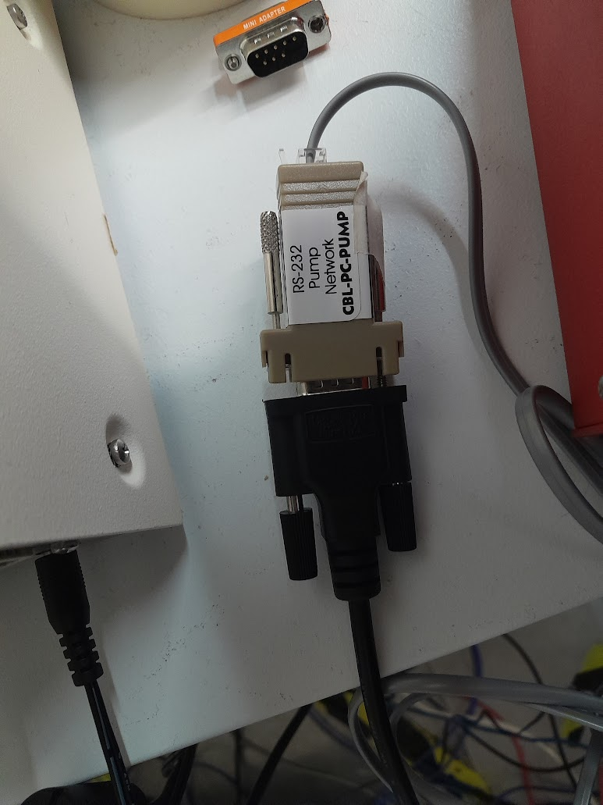

WPI Aladdin Syringe Pump
Documentation
Documentation is available for the pump at \\isis\shares\ISIS_Experiment_Controls\Manuals\WPI__Aladdin_1000_syringe_pump
Connection Details
RS-232C Specifications |
|
|---|---|
Baud rate |
19200, 9600, 2400, 1200, or 300 Baud |
Start bits |
1 bit |
Stop bits |
1 bit |
Parity |
None |
Data length |
8 bit |
Flow control |
None |
Command Syntax:
Communication command is terminated with
. Communication return starts with
and is terminated with .
Command float formatting:
The device requires strict formatting on its floats. The output value must fit 5 characters and be within the range 9999. to .9999.
Specifications
Networked Pumps
Multiple pumps can be daisy chained together and controlled via a single IOC. Each pump has an address which can be set using the ID:SP record. By default (and in a single pump configuration) this is 00. IOC now supports talking to up to 4 pumps at the same time without having to modify the ID:SP. You can set the macros for ID1 through ID4 in the IOC config and then reference the usual PVs with the :1: through :4: prefixes. E.g. ALDN1000_01:1:…
A given pump can have it’s own unique address defined. So two pumps might not have the same address. Typically pumps are labelled with a sticker 00, 01 etc. that will indicate this. If you ever need to change this the pump has an method that will allow you to define this (refer to the manuals section on the ADR method).
Volume Units
The device has it’s own logic for setting the units of volume to be pumped VOLUME:UNITS based on the diameter of the syringe installed in the pump DIAMETER. In testing it was found that: Diameter <= 14.00mm - uL, Diameter > 14.00mm = mL. A small warning about this has been placed on the OPI to inform users.
Rate Units
The units for the rate can be selected but will only be set when setting the RATE:SP. You can resend the same set point to set newly selected rate units.
Connection notes
Use supplied modem telephone cable into pump port labelled “computer port”, then use adapter supplied to connect to a female moxa cable and into moxa box. (There is another port on the pump labelled Network - this is not for the main network, but used if you wish to join pumps together in a “pump network”)
Note most of these units have been helpfully labelled by the soft matter group, so this should be indicated like so:
{kind=link}
For one pump it must be given address 0, see below. Additional pumps can be daisy chained using the “network” modem port on the first pump to connect to the “computer” port on a second. The additional pumps must each have a unique address.
The manual says to power pump on after rs232 cable is attached
The device has a configurable baud rate. See setup key below
The device supports two rs232 modes: basic and safe. It looks like LabVIEW uses “basic” and attempts to turn off safe mode. A pump in basic mode can be controlled via an emulator like hyperterm.
A triangle in top left of LED display is the “rs232 indicator” – indicates valid reception of a command at some point since power on. It looked like this triangle remained after cable was disconnected for example.
Notes from the “setup key” section of manual
Hold diameter key to enter setup mode, you will initially get first configuration parameter “PF:” which is power failure mode. It will then cycle through each setup parameter after about 2 seconds.
To change value of a parameter press an arrow key under value on LED display, to store new value wait two seconds or press any non-arrow key
The Last two setup parameters are:
Ad- the pump address, should be 00 for just one pumpnnnn– the baud rate, we use 9600 so make sure this number is displayed there
If r232 error is displayed on LED panel, indicates a timeout in “safe communication mode”. We should not be in this mode anyway. Before the pump can operate, it needs to know syringe inside diameter – set this from front panel of device
Terminal emulator test
If the pump is in basic rs232 mode, connect and send command VER followed by carriage return, should get a reply with the firmware version details
enabling basic mode if in safe mode
According to manual you need to send the string 0x2 0x8 SAF0 0x55 0x43 0x3 where 0x represents the hex value of the character to send. It may be this assumes pump address 0, if you want to set a non-zero addressed pump then you may need to prefix SAF0 with the pump address and then calculate the new checksum (which is what 0x55 0x43 is). See manual.
connection cables
The manual mentions two connector cables, a “GN-PC” variety to connect to a PC and “GN-NET” variety to connect pumps. A separate rs232 adapter is also mentioned. Check it is a GN-PC telephone cable and not a GN-NET telephone cable to connect to this rs232 adapter, I’m not sure if this is identified ion the cable but i think the GN-PC is dark grey and GN-NET is light grey
It should look like this:
{kind=link}
Where the black cable is a Male Moxa cable and the grey cable is plugged into the “PC” port on the pump.
Sockets on device
On the rear of the pump itself are two identical sockets, one labelled “To Computer” and the other “To Network”, both under a heading “RS232” (or words to that effect). The cable which is ultimately connected to the MOXA needs to be plugged into the “To Computer” socket. The “To Network” socket is for daisy-chaining pumps together. If for some reason the IOC is receiving replies identical to those being sent, then it could be that the cable is in the wrong socket.